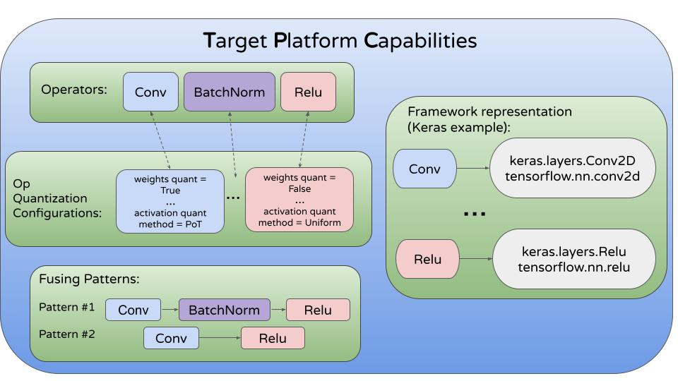

target_platform Module¶
MCT can be configured to quantize and optimize models for different hardware settings. For example, when using qnnpack backend for Pytorch model inference, Pytorch quantization configuration uses per-tensor weights quantization for Conv2d, while when using tflite modeling, Tensorflow uses per-channel weights quantization for Conv2D.
This can be addressed in MCT by using the target_platform module, that can configure different parameters that are hardware-related, and the optimization process will use this to optimize the model accordingly. Models for TFLite and qnnpack can be observed here, and can be used using get_target_platform_capabilities function.
Note
For now, some fields of OpQuantizationConfig are ignored during
the optimization process (currently, the quantizer type, number of bits, and quantization enable/disable information
are in use).
MCT will use more information from
OpQuantizationConfig, in the future.
The object MCT should get called TargetPlatformCapabilities (or shortly TPC). This diagram demonstrates the main components:
{kind=link}
Now, we will explain about each component with examples.
The first part is configuring the quantization method for both wights and activations of an operator. Several methods can be used using QuantizationMethod API:
QuantizationMethod¶
Select a method to use during quantization:
- class model_compression_toolkit.target_platform.QuantizationMethod(value)¶
Method for quantization function selection:
POWER_OF_TWO - Symmetric, uniform, threshold is power of two quantization.
KMEANS - k-means quantization.
LUT_QUANTIZER - quantization using a look up table.
SYMMETRIC - Symmetric, uniform, quantization.
UNIFORM - uniform quantization,
Using a quantization method (or methods, if the weights and activations of an operator are quantized differently) Quantization configuration of different operators can be created using OpQuantizationConfig:
OpQuantizationConfig¶
- class model_compression_toolkit.target_platform.OpQuantizationConfig(activation_quantization_method, weights_quantization_method, activation_n_bits, weights_n_bits, weights_per_channel_threshold, enable_weights_quantization, enable_activation_quantization, quantization_preserving, fixed_scale, fixed_zero_point, weights_multiplier_nbits)¶
OpQuantizationConfig is a class to configure the quantization parameters of an operator.
- Parameters:
activation_quantization_method (QuantizationMethod) – Which method to use from QuantizationMethod for activation quantization.
weights_quantization_method (QuantizationMethod) – Which method to use from QuantizationMethod for weights quantization.
activation_n_bits (int) – Number of bits to quantize the activations.
weights_n_bits (int) – Number of bits to quantize the coefficients.
weights_per_channel_threshold (bool) – Whether to quantize the weights per-channel or not (per-tensor).
enable_weights_quantization (bool) – Whether to quantize the model weights or not.
enable_activation_quantization (bool) – Whether to quantize the model activations or not.
quantization_preserving (bool) – Whether quantization parameters should be the same for an operator’s input and output.
fixed_scale (float) – Scale to use for an operator quantization parameters.
fixed_zero_point (int) – Zero-point to use for an operator quantization parameters.
weights_multiplier_nbits (int) – Number of bits to use when quantizing in look-up-table.
If, for example, we would like to quantize an operator’s weights with 8 bits (and per-channel), its activations with 8 bits, and the quantization thresholds (for both weights and activations) must be power-of-two, we can create the OpQuantizationConfig:
op_qc_8bit = OpQuantizationConfig(
activation_quantization_method=QuantizationMethod.POWER_OF_TWO,
weights_quantization_method=QuantizationMethod.POWER_OF_TWO,
activation_n_bits=8,
weights_n_bits=8,
weights_per_channel_threshold=True,
enable_weights_quantization=True,
enable_activation_quantization=True
)
We will demonstrate later how to attach this OpQuantizationConfig to a specific operator.
If an operator can be quantized in different ways (the simplest example is mixed-precision quantization), one can create a QuantizationConfigOptions instance to represent a set of possible quantization configuration options for an operator:
QuantizationConfigOptions¶
- class model_compression_toolkit.target_platform.QuantizationConfigOptions(quantization_config_list, base_config=None)¶
Wrap a set of quantization configurations to consider during the quantization of an operator.
- Parameters:
quantization_config_list (List[OpQuantizationConfig]) – List of possible OpQuantizationConfig to gather.
base_config (OpQuantizationConfig) – Fallback OpQuantizationConfig to use when optimizing the model in a non mixed-precision manner.
If a QuantizationConfigOptions is created with more than one OpQuantizationConfig option, a base_config must be passed to the QuantizationConfigOptions in order to support the model when MCT optimizes the model in no mixed-precision manner.
For example, we would like to quantize an operator’s weights with either 2, 4 or 8 bits (and in case we would like to use MCT non mixed-precision functions, we would like to quantize the operator using 8 bits). For this we can create new OpQuantizationConfigs based on previously created OpQuantizationConfigs, and gather them under a single QuantizationConfigOptions instance:
# To quantize a model using mixed-precision, create a QuantizationConfigOptions with more
# than one QuantizationConfig.
# In this example, we aim to quantize some operations' weights using 2, 4 or 8 bits.
op_qc_4bit = op_qc_8bit.clone_and_edit(weights_n_bits=4)
op_qc_2bit = op_qc_8bit.clone_and_edit(weights_n_bits=2)
mixed_precision_configuration_options = QuantizationConfigOptions([op_qc_8bit,
op_qc_4bit,
op_qc_2bit],
base_config=op_qc_8bit)
The main class to define the hardware-related properties, is called TargetPlatformModel. Using a TargetPlatformModel object we can create operator sets, configure how these operators sets will be quantized, group operators by common properties and configure patterns of operators to fuse:
TargetPlatformModel¶
- class model_compression_toolkit.target_platform.TargetPlatformModel(default_qco, name='default_tp_model')¶
Modeling of the hardware the quantized model will use during inference. The model contains definition of operators, quantization configurations of them, and fusing patterns so that multiple operators will be combined into a single operator.
- Parameters:
default_qco (QuantizationConfigOptions) – Default QuantizationConfigOptions to use for operators that their QuantizationConfigOptions are not defined in the model.
name (str) – Name of the model.
A default QuantizationConfigOptions (containing a single OpQuantizationConfig) must be passed when instancing a TargetPlatformModel object. It comes to use when MCT needs to optimize an operator that is not defined explicitly in the TargetPlatformModel. In this case, the OpQuantizationConfig in the default QuantizationConfigOptions will guide MCT how this operator should be optimized. For example:
# Create a QuantizationConfigOptions with a single OpQuantizationConfig to use as
# a default configuration options.
default_configuration_options = QuantizationConfigOptions([op_qc_8bit])
# Create a TargetPlatformModel and set its default quantization config.
# This default configuration will be used for all operations
# unless specified otherwise:
my_model = TargetPlatformModel(default_configuration_options, name='my_model')
Then, we can start defining the model by creating OperatorsSets:
OperatorsSet¶
- class model_compression_toolkit.target_platform.OperatorsSet(name, qc_options=None)¶
Set of operators that are represented by a unique label.
- Parameters:
name (str) – Set’s label (must be unique in a TargetPlatformModel).
qc_options (QuantizationConfigOptions) – Configuration options to use for this set of operations.
An OperatorsSet gathers group of operators that are labeled by a unique name and can be attached to a QuantizationConfigOptions (so MCT will use these options to optimize operators from this set). For example, if FullyConnected can be quantized using 2, 4, or 8 bits, we can create the next OperatorsSet using the previously created mixed_precision_configuration_options:
# Define operators set named "FullyConnected" and attach
# mixed_precision_configuration_options as its QuantizationConfigOptions:
fc_opset = OperatorsSet("FullyConnected", mixed_precision_configuration_options)
The QuantizationConfigOptions is optional. An OperatorsSet can be also created without any attached QuantizationConfigOptions. Operators in this kind of OperatorsSets are attached implicitly to the default QuantizationConfigOptions of the TargetPlatformModel they are part of:
# Define operators set named "Relu" and do not attach
# it any QuantizationConfigOptions:
relu_opset = OperatorsSet("Relu")
Another component of a TargetPlatformModel is Fusing. Fusing defines a list of operators that should be combined and treated as a single operator, hence no quantization is applied between them when they appear in a model:
Fusing¶
- class model_compression_toolkit.target_platform.Fusing(operator_groups_list, name=None)¶
- Parameters:
name – Name of component.
For example, to fuse the previously created two OperatorsSets fc_opset and relu_opset we can create the next Fusing:
# Combine multiple operators into a single operator to avoid quantization between
# them. To do this we define fusing patterns using the OperatorsSets that were created.
Fusing([fc_opset, relu_opset])
Notice that the list of opsets must contain at least two OperatorSets. Also notice that sublist of the OperatorsSet list that is passed to the Fusing, will not be fused, unless another Fusing is created for that. For example, if a model is defined to fuse three sequenced operators [FullyConnected, Relu, Add]:
# In addition to the OperatorsSets we created, create new OperatorsSets for "add" ops:
add_opset = OperatorsSet("Add")
# Fuse sequences of operators:
Fusing([fc_opset, relu_opset, add_opset])
and the pre-trained model that MCT optimizes has a sequence of [fc_opset, relu_opset] where the next operator is not an add_opset, the two operators [fc_opset, relu_opset] will not be fused as the only defined fusing pattern is of the three OperatorsSets [fc_opset, relu_opset, add_opset]. In order to fuse sequences of [fc_opset, relu_opset] as well, a new Fusing should be defined:
# Fuse sequences of the three listed operators:
Fusing([fc_opset, relu_opset, add_opset])
# In addition, fuse sequences of the two listed operators:
Fusing([fc_opset, relu_opset])
Now, if MCT encounters a sequence of [fc_opset, relu_opset] they will be fused regardless the following operator. Sequences of [fc_opset, relu_opset, add_opset] will be fused as well, and the new Fusing of [fc_opset, relu_opset] will not affect them (but will affect patterns of [fc_opset, relu_opset], of course).
When multiple operators should be fused in a similar way, an OperatorSetConcat can be used:
OperatorSetConcat¶
- class model_compression_toolkit.target_platform.OperatorSetConcat(*opsets)¶
Concatenate a list of operator sets to treat them similarly in different places (like fusing).
Group a list of operation sets.
- Parameters:
*opsets (OperatorsSet) – List of operator sets to group.
OperatorSetConcat gathers multiple OperatorsSet and can be specified in a fusing operators list. If, for example, we want to fuse the patterns [fc_opset, add_opset] and [fc_opset, relu_opset], we can either create two separate Fusing objects as was demonstrated above, or an OperatorSetConcat can be used as follows:
# Concatenate two OpseratorsSet objects to be treated similarly when fused:
activations_after_fc_to_fuse = OperatorSetConcat(relu_opset, add_opset)
# Create a fusing pattern using OperatorSetConcat. This is equivalent to define two
# separate fusing patterns of: [fc_opset, relu_opset], [fc_opset, add_opset]
Fusing([fc_opset, activations_after_fc_to_fuse])
TargetPlatformModel Code Example¶
from typing import List, Tuple
import model_compression_toolkit as mct
from model_compression_toolkit.core.common.target_platform import OpQuantizationConfig, TargetPlatformModel
tp = mct.target_platform
def get_tp_model() -> TargetPlatformModel:
"""
A method that generates a default target platform model, with base 8-bit quantization configuration and 8, 4, 2
bits configuration list for mixed-precision quantization.
NOTE: in order to generate a target platform model with different configurations but with the same Operators Sets
(for tests, experiments, etc.), use this method implementation as a test-case, i.e., override the
'get_op_quantization_configs' method and use its output to call 'generate_tp_model' with your configurations.
Returns: A TargetPlatformModel object.
"""
base_config, mixed_precision_cfg_list = get_op_quantization_configs()
return generate_tp_model(default_config=base_config,
base_config=base_config,
mixed_precision_cfg_list=mixed_precision_cfg_list,
name='default_tp_model')
def get_op_quantization_configs() -> Tuple[OpQuantizationConfig, List[OpQuantizationConfig]]:
"""
Creates a default configuration object for 8-bit quantization, to be used to set a default TargetPlatformModel.
In addition, creates a default configuration objects list (with 8, 4 and 2 bit quantization) to be used as
default configuration for mixed-precision quantization.
Returns: An OpQuantizationConfig config object and a list of OpQuantizationConfig objects.
"""
# Create a quantization config.
# A quantization configuration defines how an operator
# should be quantized on the modeled hardware:
eight_bits = tp.OpQuantizationConfig(
activation_quantization_method=tp.QuantizationMethod.POWER_OF_TWO,
weights_quantization_method=tp.QuantizationMethod.POWER_OF_TWO,
activation_n_bits=8,
weights_n_bits=8,
weights_per_channel_threshold=True,
enable_weights_quantization=True,
enable_activation_quantization=True,
quantization_preserving=False,
fixed_scale=None,
fixed_zero_point=None,
weights_multiplier_nbits=None)
# To quantize a model using mixed-precision, create
# a list with more than one OpQuantizationConfig.
# In this example, we quantize some operations' weights
# using 2, 4 or 8 bits, and when using 2 or 4 bits, it's possible
# to quantize the operations' activations using LUT.
four_bits = eight_bits.clone_and_edit(weights_n_bits=4)
two_bits = eight_bits.clone_and_edit(weights_n_bits=2)
mixed_precision_cfg_list = [eight_bits, four_bits, two_bits]
return eight_bits, mixed_precision_cfg_list
def generate_tp_model(default_config: OpQuantizationConfig,
base_config: OpQuantizationConfig,
mixed_precision_cfg_list: List[OpQuantizationConfig],
name: str) -> TargetPlatformModel:
"""
Generates TargetPlatformModel with default defined Operators Sets, based on the given base configuration and
mixed-precision configurations options list.
Args
default_config: A default OpQuantizationConfig to set as the TP model default configuration.
base_config: An OpQuantizationConfig to set as the TargetPlatformModel base configuration for mixed-precision purposes only.
mixed_precision_cfg_list: A list of OpQuantizationConfig to be used as the TP model mixed-precision
quantization configuration options.
name: The name of the TargetPlatformModel.
Returns: A TargetPlatformModel object.
"""
# Create a QuantizationConfigOptions, which defines a set
# of possible configurations to consider when quantizing a set of operations (in mixed-precision, for example).
# If the QuantizationConfigOptions contains only one configuration,
# this configuration will be used for the operation quantization:
default_configuration_options = tp.QuantizationConfigOptions([default_config])
# Create a TargetPlatformModel and set its default quantization config.
# This default configuration will be used for all operations
# unless specified otherwise (see OperatorsSet, for example):
generated_tpc = tp.TargetPlatformModel(default_configuration_options, name=name)
# To start defining the model's components (such as operator sets, and fusing patterns),
# use 'with' the TargetPlatformModel instance, and create them as below:
with generated_tpc:
# Create an OperatorsSet to represent a set of operations.
# Each OperatorsSet has a unique label.
# If a quantization configuration options is passed, these options will
# be used for operations that will be attached to this set's label.
# Otherwise, it will be a configure-less set (used in fusing):
# May suit for operations like: Dropout, Reshape, etc.
tp.OperatorsSet("NoQuantization",
tp.get_default_quantization_config_options().clone_and_edit(
enable_weights_quantization=False,
enable_activation_quantization=False))
# Create Mixed-Precision quantization configuration options from the given list of OpQuantizationConfig objects
mixed_precision_configuration_options = tp.QuantizationConfigOptions(mixed_precision_cfg_list,
base_config=base_config)
# Define operator sets that use mixed_precision_configuration_options:
conv = tp.OperatorsSet("Conv", mixed_precision_configuration_options)
fc = tp.OperatorsSet("FullyConnected", mixed_precision_configuration_options)
# Define operations sets without quantization configuration
# options (useful for creating fusing patterns, for example):
any_relu = tp.OperatorsSet("AnyReLU")
add = tp.OperatorsSet("Add")
sub = tp.OperatorsSet("Sub")
mul = tp.OperatorsSet("Mul")
div = tp.OperatorsSet("Div")
prelu = tp.OperatorsSet("PReLU")
swish = tp.OperatorsSet("Swish")
sigmoid = tp.OperatorsSet("Sigmoid")
tanh = tp.OperatorsSet("Tanh")
# Combine multiple operators into a single operator to avoid quantization between
# them. To do this we define fusing patterns using the OperatorsSets that were created.
# To group multiple sets with regard to fusing, an OperatorSetConcat can be created
activations_after_conv_to_fuse = tp.OperatorSetConcat(any_relu, swish, prelu, sigmoid, tanh)
activations_after_fc_to_fuse = tp.OperatorSetConcat(any_relu, swish, sigmoid)
any_binary = tp.OperatorSetConcat(add, sub, mul, div)
# ------------------- #
# Fusions
# ------------------- #
tp.Fusing([conv, activations_after_conv_to_fuse])
tp.Fusing([fc, activations_after_fc_to_fuse])
tp.Fusing([any_binary, any_relu])
# tp.Fusing([conv, add, any_relu])
# tp.Fusing([conv, any_relu, add])
return generated_tpc
After modeling the hardware MCT should optimize according to, this hardware model needs to be attached to a specific framework information in order to associate the operators that are defined in hardware model to layers in different representations of a framework. For example, if we created an OperatorsSet for “Add” operator, in Tensorflow this operator can be used by two different layers: keras.layers.Add, tf.add. To attach a list of framework’s layers to an OperatorsSet that is defined in the TargetPlatformModel, an OperationsSetToLayers can be used:
OperationsSetToLayers¶
- class model_compression_toolkit.target_platform.OperationsSetToLayers(op_set_name, layers)¶
Associate an OperatorsSet to a list of framework’s layers.
- Parameters:
op_set_name (str) – Name of OperatorsSet to associate with layers.
layers (List[Any]) – List of layers/FilterLayerParams to associate with OperatorsSet.
Using OperationsSetToLayers we can associate an OperatorsSet label to a list of framework’s layers:
import tensorflow as tf
from keras.layers import Add
OperationsSetToLayers("Add", [tf.add, Add])
This way, when MCT quantizes one of the layers tf.add or keras.layers.Add, it uses the QuantizationConfigOptions that is associated with the OperatorsSet that was labeled “Add” to optimize the layer.
There are cases where an operator can be represented using a layer but it must have a specific configuration.
For example, in case the optimization should be different for bounded ReLU and unbounded ReLU, two OperatorSets can be created, and the layers that will be attached to each OperatorSet will have to be filtered. For that, LayerFilterParams can be used:
LayerFilterParams¶
- class model_compression_toolkit.target_platform.LayerFilterParams(layer, *conditions, **kwargs)¶
Wrap a layer with filters to filter framework’s layers by their attributes.
- Parameters:
layer – Layer to match when filtering.
*conditions (AttributeFilter) – List of conditions to satisfy.
**kwargs – Keyword arguments to filter layers according to.
LayerFilterParams wraps a layer with several conditions and key-value pairs and can check whether a layer matches the layer, conditions and key-value pairs. If for example a distinguish need to be made between bounded-ReLU and unbounded-ReLU in Tensorflow the next LayerFilterParams can be created:
from keras.layers import ReLU
# Create a LayerFilterParams that matches ReLU layers that have an attribute 'max_value'
# and it is None
unbounded_relu_filter = LayerFilterParams(ReLU, max_value=None)
# Create a LayerFilterParams that matches ReLU layers that have an attribute 'max_value'
# and it is not None
unbounded_relu_filter = LayerFilterParams(ReLU, NotEq('max_value', None))
In this example, we used NotEq which is a way to filter layers with attributes that has a value different than the value that was passed (in this case - None). More filters can be created and passed to the LayerFilterParams in order to create more detailed filter. More filters and usage examples are detailed here.
These LayerFilterParams instances can now be attached to OperatorsSets in the TargetPlatformModel using OperationsSetToLayers just like any other layers:
import tensorflow as tf
from keras.layers import ReLU, Activation
OperationsSetToLayers("ReLU", [tf.nn.relu,
tf.nn.relu6,
LayerFilterParams(ReLU, negative_slope=0.0),
LayerFilterParams(Activation, activation="relu")])
The mapping from OperatorsSets to layers’ lists are part of a class called TargetPlatformCapabilities which attaches the layers representations to OperatorsSets in a TargetPlatformModel instance:
TargetPlatformCapabilities¶
- class model_compression_toolkit.target_platform.TargetPlatformCapabilities(tp_model, name='base', version=None)¶
Attach framework information to a modeled hardware.
- Parameters:
tp_model (TargetPlatformModel) – Modeled hardware to attach framework information to.
name (str) – Name of the TargetPlatformCapabilities.
version (str) – TPC version.
To create a TargetPlatformCapabilities, a TargetPlatformModel instance should be passed upon the TargetPlatformCapabilities initialization. Then, OperationsSetToLayers can be created and attached to the TargetPlatformCapabilities like in the following example:
TargetPlatformCapabilities Code Example¶
import tensorflow as tf
from packaging import version
if version.parse(tf.__version__) < version.parse("2.6"):
from tensorflow.keras.layers import Conv2D, DepthwiseConv2D, Dense, Reshape, ZeroPadding2D, \
Dropout, \
MaxPooling2D, Activation, ReLU, Add, Subtract, Multiply, PReLU, Flatten, Cropping2D, LeakyReLU
else:
from keras.layers import Conv2D, DepthwiseConv2D, Dense, Reshape, ZeroPadding2D, \
Dropout, MaxPooling2D, Activation, ReLU, Add, Subtract, Multiply, PReLU, Flatten, Cropping2D, LeakyReLU
from model_compression_toolkit.core.tpc_models.default_tpc.v3.tp_model import get_tp_model
import model_compression_toolkit as mct
from model_compression_toolkit.core.tpc_models.default_tpc.v3 import __version__ as TPC_VERSION
tp = mct.target_platform
def get_keras_tpc() -> tp.TargetPlatformCapabilities:
"""
get a Keras TargetPlatformCapabilities object with default operation sets to layers mapping.
Returns: a Keras TargetPlatformCapabilities object for the given TargetPlatformModel.
"""
default_tp_model = get_tp_model()
return generate_keras_tpc(name='default_keras_tpc', tp_model=default_tp_model)
def generate_keras_tpc(name: str, tp_model: tp.TargetPlatformModel):
"""
Generates a TargetPlatformCapabilities object with default operation sets to layers mapping.
Args:
name: Name of the TargetPlatformCapabilities.
tp_model: TargetPlatformModel object.
Returns: a TargetPlatformCapabilities object for the given TargetPlatformModel.
"""
keras_tpc = tp.TargetPlatformCapabilities(tp_model,
name=name,
version=TPC_VERSION)
with keras_tpc:
tp.OperationsSetToLayers("NoQuantization", [Reshape,
tf.reshape,
Flatten,
Cropping2D,
ZeroPadding2D,
Dropout,
MaxPooling2D,
tf.split,
tf.quantization.fake_quant_with_min_max_vars,
tf.math.argmax,
tf.shape,
tf.__operators__.getitem,
tf.compat.v1.shape])
tp.OperationsSetToLayers("Conv", [Conv2D,
DepthwiseConv2D,
tf.nn.conv2d,
tf.nn.depthwise_conv2d])
tp.OperationsSetToLayers("FullyConnected", [Dense])
tp.OperationsSetToLayers("AnyReLU", [tf.nn.relu,
tf.nn.relu6,
tf.nn.leaky_relu,
ReLU,
LeakyReLU,
tp.LayerFilterParams(Activation, activation="relu"),
tp.LayerFilterParams(Activation, activation="leaky_relu")])
tp.OperationsSetToLayers("Add", [tf.add, Add])
tp.OperationsSetToLayers("Sub", [tf.subtract, Subtract])
tp.OperationsSetToLayers("Mul", [tf.math.multiply, Multiply])